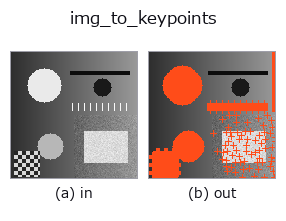

bridge op• 数据种类:image → keypoints
• 调用:fullseye.apply(img, "img_to_keypoints", a=0.5, b=0.5)(2-D 的模型是一张图 + 两个标量旋钮 a,b∈[0,1])

*图为在 128×128 合成输入上实际运行的输出。左为输入，右为输出。点云以俯视散点显示(亮度 = z)，一维序列为折线，体数据为沿 z 的最大值投影，视频为中间帧，复数图像为幅值；无法成像的返回值直接显示数值。*
扫描旋钮 a(0.1 / 0.5 / 0.9，另一旋钮取默认):
▸ img_to_keypoints: knob a sweep (docs site)
扫描旋钮 b(0.1 / 0.5 / 0.9，另一旋钮取默认):
▸ img_to_keypoints: knob b sweep (docs site)
换别的图像(合成场景 / 照片 / 硬币。上排为输入，下排为对应输出。旋钮取默认):
▸ img_to_keypoints: other inputs (docs site)
*第 4 列是彩色 (H,W,3) 输入。此算子能正确处理颜色而不跨通道(不把颜色通道当作第三个空间轴卷积)。*
把图像的局部极大值变成像面点 (u, v) = (列, 行)，形状 (N,2)。
> 以下的详细说明为原文 —— 摘要与标题已翻译。
`scipy.ndimage.maximum_filter` で窓内最大と一致し、かつ値がしきい値以上の
画素を極大とする(同値の平坦部は全画素が極大になる —— 前段に `gaussian`
を置くと減る)。
• `a → 窓の一辺 k = 3 + 2 * int(a * 4)`(a=0.5 で 7。大きいほど疎)。
• `b → しきい値 thr = b`(値 ≥ thr の極大だけ残す。b=0 で全極大)。
• 返り値: `(N, 2) float64 の (u, v) = (col, row)`。値の降順、同値は
行優先で並ぶ(決定的)。極大が 1 つも無ければ (0, 2) —— 空でも形の
契約は満たすが、下流の op によっては空を拒否する。
• 画像の縁は `mode="nearest"` で処理するので縁の画素も極大になりうる。
使いどころ: `tb_keypoints_to_image2d`(点を画像に戻す)、
`tb_keypoints_uv_to_points`(z=0 の点群にする)への入口。
• 示例数据目录(下载 URL / 许可证) —— 2-D 用 skimage.data(BSD/公有领域)加合成图,3-D 给出真实数据源(Stanford/PDS 等)的下载 URL。
• 算子来历与参考文献 —— 该算子族所依据的研究/方法出处。
• 算法的正典(作者・年份)与用途见上面的族使用指南。
下面的程序已确认可以运行(与图相同的输入)。在 Studio 帮助中，此块会变成按钮，可当场加载并运行。
img_to_keypoints 0.50 0.50
▸ Load this pipeline · Load & run
• gallery2d_bridge — py -3.11 examples/gallery2d_bridge.py
keypoints 作为输入)identity · tb_keypoints_uv_to_points · tb_keypoints_to_image2d
bridge)img_to_points · img_to_signal · img_to_counts · img_to_matrix · img_to_video · img_to_volume · img_to_lightfield · img_to_rgb
*Provenance: ops.py — 2D 算子登记表。本条目由 tools/opdocs.py md 自动生成(请勿手工编辑)。*
© 2026 Kazufumi Furuse — Fullseye operator documentation. Licensed under Apache-2.0.
{kind=link}
{kind=link}
{kind=link}